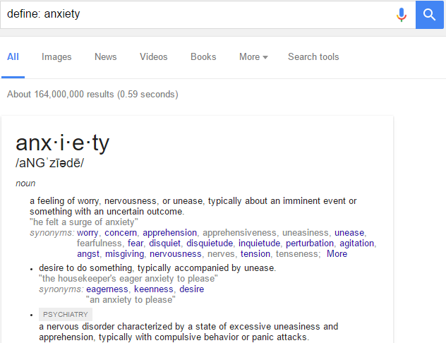
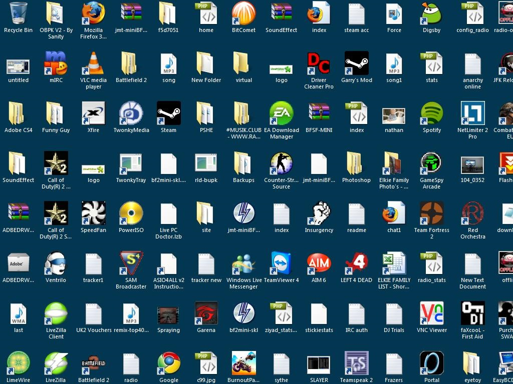
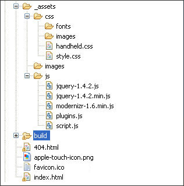

The path to englightenment
:]Why is the art of Googling important?
Well, a handful of reasons
A recent study at Illinois Wesleyan states only 7 of 30 students are able to conduct a somewhat proper search
You are in a field that will require you to search, read, and study for the rest of your career.
Knowing what to search for and how to search for it will greatly increase productivity.
And let's be real, it is 2016. The amount of information on the internet is unreal.
So, how do we do this?
First, you decide what you want to search for
Let's search for ternary operators. We ONLY want articles from 2012-2016. Let's also exclude some of the other programming languages.
Beautiful. We have reduced the results from 264,000 to 5,450 results. We now have only articles pertaining to exactly what we want.
Is there a list of operators for Google?
Yes, however, the list is quite large and I'm lazy.
One list of examples/operators Another great list.
What are some general tips?
Don't waste your time capitalizing words/letters
Don't ask questions. You aren't searching for a question. You are searching for an answer.
Keep the search criteria short. Fewer keywords to search for gives a much more precise result.
Be very picky about words you don't want included. Remember the example from before? We excluded a few programming languages. Trust me, it sucks wasting time reading articles on PHP.
A few helpful keyboard shortcuts
Find. Control + F || Command + F
Use that command to open a small search field. Anything you type in that field will be highlighted in your document/browser.Selecting the address bar. Control + L || Command + L
When you have 6-10 browser tabs open, using this shortcut reduces time of reaching for the mouse and clicking into the bar. It doesn't seem big, but it is more efficient.Moving between windows. Alt + Tab || Command + Shift + Tab(?)
This command will move you through all opened applications on your machine.Moving between tabs. Control + Tab || Command + Shift + Left/Right Arrow
Moves you in between the tabbed content in your browser or editor.Opening a new tab. Control + T || Command + T
Opens a new tab in browser or editor.Find. Control + F || Command + F
Use that command to open a small search field. Anything you type in that field will be highlighted in your document/browser.Folder structure
Don't be this person:
Windows, Linux, and Mac have an amazing file system by default. Stop placing things on your desktop. Not only is it inefficient with your computer's RAM usage, it leaves clutter.
Folder is neatly structured. All JavaScript, images, and CSS are in their matching folders. The 404.html and index.html are in the root directory. That is beautiful.
Here we have file system structure. Notice how in their Documents directory, they break off into a structure of "Personal" and "Work". This would be an ideal situation for people in this class. You could have a folder for Grand Circus, which contains folders for exercises, labs, code challenges, your portfolio, and notes(Hi, PDF's).
This may seem a bit confusing. Don't worry, you will understand in a few weeks. The important things to note here are the specific files in their specific folders.

Don't do this.